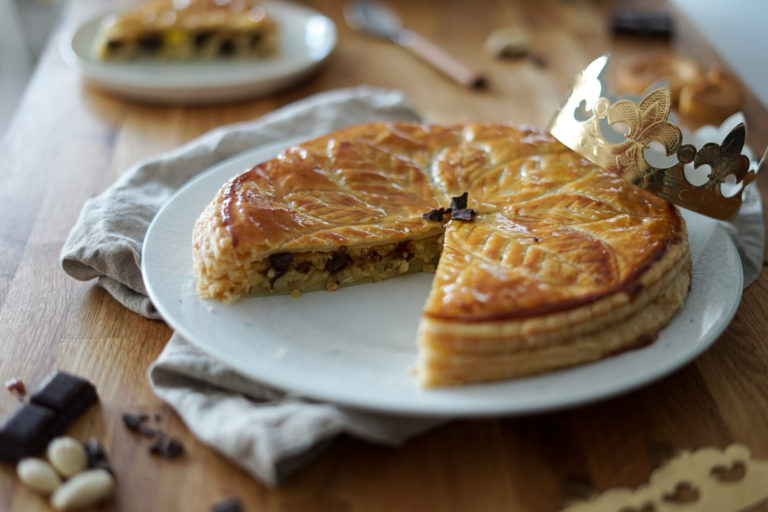

Tarte Frangipane Poire Chocolat

Description :
Avis aux amateurs de galette des rois ou de tarte aux poires et chocolat !
Cette recette saura ravir les petits et les grands en Janvier (ou tout le reste de l'année) !
Ingrédients :
- 125g de sucre en poudre
- 100g de beurre tendre
- 1 pâte feuilletée
- 100g de chocolat
- 3 poires bien mûres
- 2 oeufs
- 100g d'amandes en poudre
Préparation :
- Préchauffer votre four à thermostat 7 (220°C).
- Dans un saladier, mélanger le beurre mou, la poudre d'amandes et le sucre jusqu'à obtention d'un mélange lisse. Ajouter les 2 œufs préalablement battus et bien mélanger.
- Dérouler la pâte en conservant la feuille de cuisson et piquer le fond. Éplucher, épépiner et couper les poires en 2.
- Faire fondre le chocolat au bain marie ou micro-ondes puis napper le fond de tarte. Verser dessus la préparation à base d'amandes et y disposer les poires.
- Faire cuire votre tarte dans la partie basse du four environ 30 min (surveiller la cuisson pour ne pas que le fond de tarte brûle).